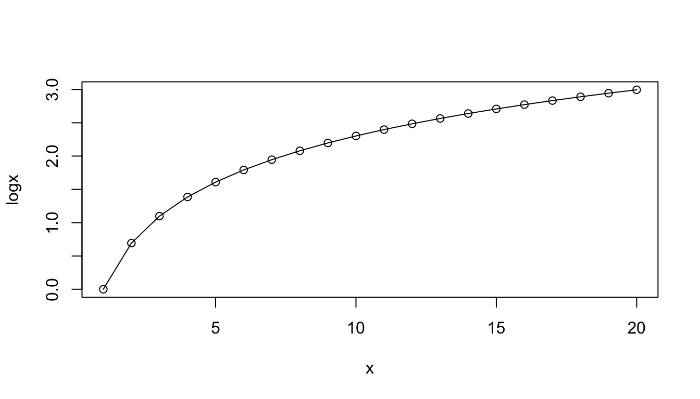
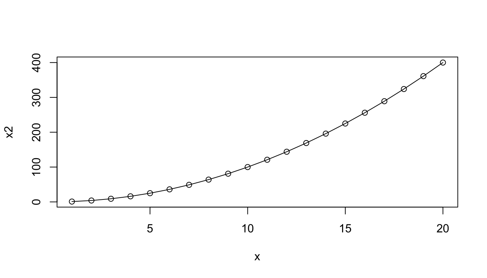
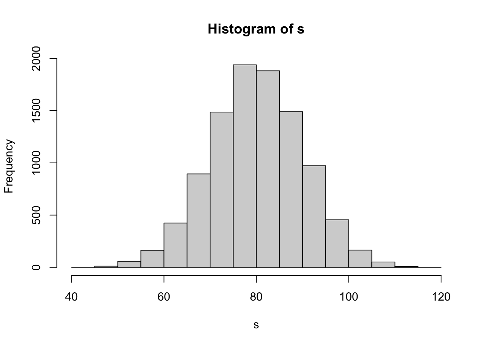

# Class of a variable
x <- 4
class(x)[1] "numeric"x <- "hi there"
class(x)[1] "character"# Class of a function
class(mean)[1] "function"The goal of this module is review important conceptual aspects of the R language as well as practices for updating R components of interest.
Almost everything in R can be thought of as an object, including variables, functions, complex data structures, and environments.
Objects in R fall into different classes. There are a few basic (or atomic) classes that pertain to variables: numeric (real numbers), integer (integer numbers), character (for text), logical (Boolean values, i.e., TRUE or FALSE, represented as 1 and 0, respectively), complex (for imaginary numbers), and factor (for defined levels of categorical variables… we will talk more about factors later on). There are other classes beyond this set of atomic classes relevant to variables. For example, both built-in and user defined functions have the class function. You can ask R to return the class of any object with the class() function, and R objects can have more than one class. You can think of class as being a property of an object that determines how generic functions operate with it.
Examples:
# Class of a variable
x <- 4
class(x)[1] "numeric"x <- "hi there"
class(x)[1] "character"# Class of a function
class(mean)[1] "function"In R, environments are objects as well.
class(globalenv()).class(globalenv())[1] "environment"Objects in R also each have a mode and a base type. These are often closely aligned with and similar to the class of an object, but the three terms refer to slightly different things. If an object has no specific class assigned to it, its class is typically the same as its mode. Mode is a mutually exclusive classification of objects, according to their basic structure. When we coerce an object to another basic structure, we are changing its mode but not necessarily the class.
# Mode of a variable
x <- 4
mode(x)[1] "numeric"x <- "hi there"
mode(x)[1] "character"# Mode of a function
mode(mean)[1] "function"# Type of a variable
x <- 4
typeof(x)[1] "double"x <- "hi there"
typeof(x)[1] "character"# Type of a function
typeof(mean)[1] "closure"NOTE: For more details on the difference between the class, mode, and base type of an object, check out the book Advanced R, Second Edition by Hadley Wickham (RStudio).
R also supports a variety of data structures for variable objects, the most fundamental of which is the vector. Vectors are variables consisting of one or more values of the same type, e.g., student’s grades on an exam. The class of a vector has to be one of the atomic classes described above. A scalar variable, such as a constant, is simply a vector with only one value.
c() or “combine” command:x <- c(15, 16, 12, 3, 21, 45, 23)
x[1] 15 16 12 3 21 45 23y <- c("once", "upon", "a", "time")
y[1] "once" "upon" "a" "time"z <- "once upon a time"
z[1] "once upon a time"class() function to check.class(x)[1] "numeric"class(z)[1] "character"x <- c("2", 2, "zombies")? What is the class of vector x now?x <- c("2", 2, "zombies")
class(x)[1] "character"This last case is an example of coercion, which happens automatically and often behind the scenes in R. When you attempt to combine different types of elements in the same vector, they are coerced to all be of the same type - the most restrictive type that can accommodate all of the elements. This takes place in a fixed order: logical → integer → double → character. For example, combining a character and an integer yields a character; combining a logical and a double yields a double.
You can also deliberately coerce a vector to be represented as a different base type by using an as.*() function, like as.logical(), as.integer(), as.double(), or as.character().
x <- c(3, 4, 5, 6, 7)
x[1] 3 4 5 6 7y <- as.character(x)
y[1] "3" "4" "5" "6" "7"Another way to create vectors is to use the sequence operator, :, which creates a sequence of values from spanning from the left side of the operator to the right, in increments of 1:
x <- 1:10
x [1] 1 2 3 4 5 6 7 8 9 10x <- 10:1
x [1] 10 9 8 7 6 5 4 3 2 1x <- 1.3:10.5
x [1] 1.3 2.3 3.3 4.3 5.3 6.3 7.3 8.3 9.3 10.3NOTE: Wrapping an assignment in parentheses, as in the code block below, allows simultaneous assignment and printing to the console!
(x <- 40:45)[1] 40 41 42 43 44 45We can also create more complex sequences using the seq() function, which takes several arguments:
x <- seq(from = 1, to = 10, by = 2)
# skips every other value
x[1] 1 3 5 7 9x <- seq(from = 1, to = 10, length.out = 3)
# creates 3 evenly spaced values
x[1] 1.0 5.5 10.0Many objects in R also have attributes associated with them, which we can think of as metadata, or data describing the object. Some attributes are intrinsic to an object. For example, a useful attribute to know about a vector object is the number of elements in it, which can be queried using the length() command.
length(x)[1] 3We can also get or assign arbitrary attributes to an object using the function attr(), which takes two arguments: the object whose attributes are being assigned and the name of the attribute.
# we can assign arbitary attributes to the vector x
attr(x, "date collected") <- "2019-01-22"
attr(x, "collected by") <- "Anthony Di Fiore"
attributes(x) # returns a list of attributes of x$`date collected`
[1] "2019-01-22"
$`collected by`
[1] "Anthony Di Fiore"class(attributes(x)) # the class of a list is "list"[1] "list"# a "list" is another R data structure
attr(x, "date collected") # returns the value of the attribute[1] "2019-01-22"Finally, every object in R also has a structure, which can be queried using the str() command.
str(x) # structure of the variable x num [1:3] 1 5.5 10
- attr(*, "date collected")= chr "2019-01-22"
- attr(*, "collected by")= chr "Anthony Di Fiore"str(mean) # struture of the function meanfunction (x, ...) str(globalenv()) # structure of the global environment<environment: R_GlobalEnv> str(attributes(x)) # attribute names are stored as a listList of 2
$ date collected: chr "2019-01-22"
$ collected by : chr "Anthony Di Fiore"NOTE: The
glimpse()function from the {dplyr} package also yields information on the structure of an object, sometimes in a more easily-readable format thanstr().
Try some vector math using the console in RStudio:
NOTE: There are at least two different ways to do this!
x <- 15:28 # or x <- c(15, 16, 17...)
y <- 1:4
(x + y)Warning in x + y: longer object length is not a multiple of shorter object
length [1] 16 18 20 22 20 22 24 26 24 26 28 30 28 30class() function. What is the length of z?Now, think carefully about this output… there are two important things going on.
First, R has used vectorized addition in creating the new variable. The first element of x was added to the first element of y, the second element of x was added to the second element of y, etc.
Second, in performing this new variable assignment, the shorter vector has been recycled. Thus, once we get to the fifth element in x we start over with the first element in y.
This means we can very easily do things like adding a constant to all of the elements in a vector or multiplying all the elements by a constant.
y <- 2
# we can use parentheses for simultaneous assignment and printing
(x + y) [1] 17 18 19 20 21 22 23 24 25 26 27 28 29 30(x * y) [1] 30 32 34 36 38 40 42 44 46 48 50 52 54 56Many function operations in R are also vectorized, meaning that if argument of a function is a vector, but the function acts on a single value, then the function will be applied to each value in the vector and will return a vector of the same length where the function has been applied to each element.
x <- 1:20
(logx <- log(x)) [1] 0.0000000 0.6931472 1.0986123 1.3862944 1.6094379 1.7917595 1.9459101
[8] 2.0794415 2.1972246 2.3025851 2.3978953 2.4849066 2.5649494 2.6390573
[15] 2.7080502 2.7725887 2.8332133 2.8903718 2.9444390 2.9957323(x2 <- x^2) [1] 1 4 9 16 25 36 49 64 81 100 121 144 169 196 225 256 289 324 361
[20] 400(y <- 4 * x + 3) [1] 7 11 15 19 23 27 31 35 39 43 47 51 55 59 63 67 71 75 79 83We can use the {base} R function plot() to do some quick visualizations.
# `plot()` takes values of x and y values as first two arguments
# the `type="o"` argument superimposes points and lines
plot(x, logx, type = "o")
plot(x, x2, type = "o")
plot(x, y, type = "o")rnorm() function to create a vector, s that contains a set of random numbers drawn from a normal distribution with mean 80 and standard deviation 10. Try doing this with n = 10, n = 100, n = 1000, n = 10000.HINT: Use
?rnormorhelp(rnorm)to access the help documentation on how to use thernorm()function.
Then, use the hist() function to plot a histogram showing the distribution of these numbers.
s <- rnorm(n = 10000, mean = 80, sd = 10)
hist(s) # hist() plots a simple histogram of values for s
mean() and sd() functions to calculate the mean and standard deviation of s. Here, the whole vector is used as the argument of the function, i.e., the function applies to a set of values not a single value. The function thus returns a vector of length 1.mean(s)[1] 79.89824sd(s)[1] 9.977044As mentioned previously, scripts in R are simply text files that store an order list of commands, which can be used to link together sets of operations to perform complete analyses and show results.
For example, you could enter the lines below into a text editor and then save the script in a file named “my_script.R” in a folder called src/ inside your working directory.
x <- 1:10
s <- sum(x)
l <- length(x)
m <- s / l
print(m)[1] 5.5If you save a script, you can then use the source() function (with the path to the script file of interest as an argument) at the console prompt (or in another script) to read and execute the entire contents of the script file. In RStudio you may also go to Code > Source to run an entire script, or you can run select lines from within a script by opening the script text file, highlighting the lines of interest, and sending those lines to the console using the “Run” button or the appropriate keyboard shortcut, ⌘-RETURN (Mac) or control-R (PC).
source("src/my_script.R")[1] 5.5# assuming the file was saved with the ".R" extension...In an R script, you might use several lines of code to accomplish a single analysis, but if you want to be able to flexibly perform that analysis with different input, it is good practice to organize portions of your code within a script into user-defined functions. A function is a bit of code that performs a specific task. It may take arguments or not, and it may return nothing, a single value, or any R object (e.g., a vector or a list, which is another data structure will discuss later on). If care is taken to write functions that work under a wide range of circumstances, then they can be reused in many different places. Novel functions are the basis of the thousands of user-designed packages that are what make R so extensible and powerful.
Try writing a function!
Open a new blank document in RStudio
Type in the code below to create the say_hi() function, which adds a name to a greeting:
# this function takes one argument, x...
# appends the value of that argument to a greeting...
# and then prints the whole greeting
say_hi <- function(x) {
hi <- paste("Greetings, ", x, "!", sep = "")
# the `paste()` command allows string concatenation
# alternatively, we could use `paste0()` and omit the
# `sep=` argument
return(hi)
}In general, the format for a function is as follows:
function_name <- function(<arguments>) {<function code>}You can send this function to the R console by highlighting it in the editor and hitting ⌘-RETURN (Mac) or control-ENTER (PC). This loads the function as an object into the working environment.
name1 <- "Rick Grimes"
name2 <- "Ruth Bader Ginsburg"
say_hi(name1)[1] "Greetings, Rick Grimes!"say_hi(name2)[1] "Greetings, Ruth Bader Ginsburg!"You can also save the function in a file, e.g., in the src/ folder inside your working directory, and then source("<path>") it in code. Save your function script as “say_hi.R” and then run the following:
source("src/say_hi.R")
name3 <- "Charles Darwin"
say_hi(name3)[1] "Greetings, Charles Darwin!"Working in RStudio, you can save script files (which, again, are just plain text files) using standard dialog boxes.
When you go to quit R (by using the q() function or by trying to close RStudio), you may be asked whether you want to…
“Save workspace image to <path>/.Rdata?”, where <path> is the path to your working directory.
Saying “Save” will store all of the contents of your workspace in a single hidden file, named “.Rdata”. The leading period (“.”) makes this invisible to most operating systems, unless you deliberately make it possible to see hidden files.
NOTE: I tend to NOT save my workspace images. You can change the default behavior for this by editing RStudio’s preferences and choosing “Always”, “Never”, or “Ask”.

The next time you start R, the workspace from “.RData” will be loaded again automatically, provided you have not changed your working directory and you have not unchecked “Restore .RData into workspace at startup” in preferences.
A second hidden file, “.Rhistory”, will also be stored in the same directory, which will contain a log of all commands you sent to the console, provided you have not unchecked “Always save history”.
R has been under continuous and active development since its inception in the late 1990s, and several updates are made available each year. These update help to fix bugs, improve speed and computational efficiency, and add new functionality to the software. The following information on how to update R is based on this post from Stack Overflow
Step 1: Get the latest version of R {-}
Step 2: Relocate your packages {-}
To ensure that your packages work with your shiny new version of R, you need to:
NOTE: You should replace “3.5” and “4.1” with whatever versions you are upgrading from and to, respectively.
NOTE: You only need to copy whatever packages are not already in the destination directory, i.e., you do not need to overwrite your new {base} package, etc., with your old one.
installed.packages() to find the proper path names. These may vary on your system, depending on where you installed Rupdate.packages() in your RStudio console, and answering “y” to all of the prompts.version
packageStatus()
(.packages())class(), mode(), typeof(), str(), attributes(), dplyr::glimpse()source()